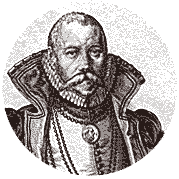
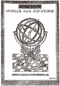

|
|
|
|
|
| |
 |
|
|
Tycho Brahe was born into a
family of Danish nobility on
15 October
1546 in Knudstorp. Initially destined to remain at
the same low level of cultivation as the
rest of his class, his uncle stepped in
and enabled him to study law and philosophy at
a Latin school, and then seven years later at
the Lutheran University of Copenhagen.
|
|
|
| |
Early on,
Tycho showed a great interest in observing the
stars. Around 1562, he began studying science at Leipzig,
where he rubbed shoulders with the most
eminent German astronomers. He attended several
universities, including Wittenberg where he fought a duel with another student.
The duel cost him his nose, which he
subsequently replaced with a metal prosthesis.
|
|
|
|
| |
|
At
the
age of 17, he became aware of
errors in the
astronomical tables and consequently decided to draw up new ones.
Showing a great deal of determination, he
had highly accurate measuring instruments made in
Augsbourg in 1569, whereupon he discovered a
new star in the constellation of Cassiopeia, which
he observed until its extinction. Opposed to the Aristotelian
conception of the incorruptible world, Tycho
proved that there were celestial bodies
beyond the sphere of the fixed stars
by studying and scrupulously recording
the scintillation of the star that he had discovered.
|
|
|
|
|
| |
|
Returning to Copenhagen
in 1575, he was taken under the wing of Frederick
II, who appointed him the official astronomer. In
addition to a considerable allowance, the island
of Hveen was awarded to him as his preserve for
building his laboratory. Nicknamed
Uraniborg
, the Palace
of Uranie (in homage to the Muse
of astronomy) was an immense and luxurious castle
enabling Tycho to tirelessly gaze at
the night sky with excellent visibility. The
vast size of the building not only
allowed him to receive several students,
assistants and scientists, but also install an alchemical
laboratory and printing works.
|
|
|
|
 |
|
He spent around
20 years in this extraordinary palace, devoted
to his study of the stars. He
then married a young woman from a humble
background against the hostile reactions of the
high Danish dignitaries. His lack of
respect for the rules and his uncompromising nature soon
gained him a bad reputation among
the people. Haughty and pretentious, Tycho
Brahe was a man of character who was
quick to voice his curt opinions concerning his
contemporaries, however admiring they might have
been! That is exactly how he scoffed at the Italian
philosopher Giordano Bruno after receiving a respectfully dedicated
copy of his Camoeracensis Acrostimus.
Hardly receptive to his theory of infinite worlds,
the astronomer retorted, "He who claims that
all the air takes up the
entire sky should not be called Jordanus
Nolanus (Giordano the Nolan) but Jordanus Nullanus
(Giordano the Numskull)".
|
|
|
|
| |
|
Upon the death
of his patron, Frederick II, the astronomer, crippled
with debts and in conflict with his class,
decided to go into exile.
|
|
|
|
|
 |
|
After a
brief stay in Wandsbeck, Tycho
and his
arsenal of instruments found refuge at the court
of Rudolph II in Prague. Fascinated by
astronomy, which he sometimes confused with astrology, the
emperor appointed Tycho imperial mathematician and
installed him at Benatky Castle
on the outskirts of Prague, where he invited Kepler to
join him. Their teamwork, which was frequently turbulent and
the source of several conflicts, served
as the basis for the famous laws on the
movement of celestial bodies and calculations of the Rudolphine
Tables.
|
|
|
| |
Tycho Brahe died in his
country of asylum on 24 October 1601
from a ruptured bladder. According to accounts,
he died at the table of Rudolph II, court
etiquette forbidding guests from leaving before their majesty.
Whatever the case, the astronomer's body lies
in the Notre Dame de Tyn in the heart
of Prague.
|
|
|
|
Although Tycho was overshadowed by Kepler, his
main disciple, he is no less an important
figure in the history of science. His
observations and tables qualify him as a founder of modern astronomy
in the same vein as Copernicus, Kepler, and
later on, Galileo.
|
|
 |
|
| |
|
|
|
|